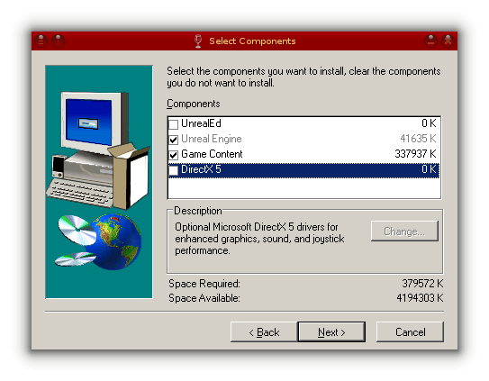
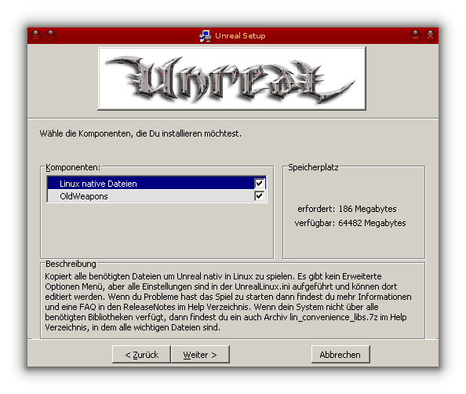

4.5. Unreal
Dieses HowTo beschreibt die Installation und Einrichtung von Unreal. Hier geht es nicht um „Unreal Gold“ oder die Erweiterung „Return to Na Pali“. Die Installation geschieht aktuell auf einem FreeBSD 12.2-RELEASE. Ältere Releases haben Probleme bei der Audio Wiedergabe.
4.5.1. Vorraussetzungen
4.5.2. Benötigte Pakete
Folgende Pakete werden zur Installation bzw. zum Spielen benötigt:
-
Benutzer von NVIDIA Hardware benötigen auch noch:
-
auf amd64 Systemen:
emulators/i386-wine Nur zur installation des Spiels und der Patches.
auf i386 Systemen:
emulators/wine Nur zur Installation des Spiels und der Patches.
Ein Programm zum dearchivieren der Patches:
archivers/p7zip oder
archivers/unzip oder
4.5.3. Die Linux hosts Datei bearbeiten
Damit im Spiel das Speichern/Laden funktioniert müssen die IP Adresse und der Hostname des Rechners in der Datei /compat/linux/etc/hosts eingetragen werden.
127.0.0.1 localhost localhost.localdomain localhost4 localhost4.localdomain4
::1 localhost localhost.localdomain localhost6 localhost6.localdomain6
192.168.X.X hostname # <- IP Adresse und Hostname eintregen
4.5.4. Installation
Es empfiehlt sich ein separates WINEPREFIX anzulegen welches am Ende wieder einfach entfernt werden kann.
% mkdir /PATH/TO/WINEPREFIX
Mit winecfg ein CD Laufwerk anlegen, das auf den Mountpunkt der Unreal CD zeigt, da es für die Installation der Patches benötigt wird.
% env WINEPREFIX=/PATH/TO/WINEPREFIX winecfg
{kind=link}
Unreal mit wine installieren.
% env WINEPREFIX=/PATH/TO/WINEPREFIX wine /PATH/TO/CD/SETUP.EXE
Im Installer dann den Zielpfad eingeben. Wenn man das WINEPREFIX wieder löschen möchte muss darauf geachtet werden, das das Installationsverzeichnis außerhalb liegt (z.B. Z:\home\user\Unreal). Dann im Fenster „Select Components“ DirectX 5 und den UnrealEd abwählen. 
{kind=link}
4.5.5. Das Spiel Patchen
Zuerst den offiziellen Patch 226Final installieren da der Patch 227i mindestens den Patch 224 vorraussetzt.
% env WINEPREFIX=/PATH/TO/WINEPREFIX wine /PATH/TO/PATCHES/UnrealPatch226Final.exe
Dann den Patch 227i
% env WINEPREFIX=/PATH/TO/WINEPREFIX wine /PATH/TO/PATCHES/UnrealClassicPatch227i.exe
Und nicht vergessen den Haken bei „Linux native Dateien“ zu setzen. 
{kind=link}
4.5.6. Benötigte Libs kopieren
Im Installationsverzeichnis gibt es im Ordner „Help“ die Datei lin_convenience_libs.tar.bz2. Diese muss entpackt und die Dateien in das Verzeichnis „System“ verschoben werden.
% cd /PATH/TO/UNREAL/Help
% tar -xjf lin_convenience_libs.tar.bz2
% cd lin_convenience_libs
% mv * ../../System
Damit das Spiel mit linux_base-c7 funktioniert müssen einige der Dateien wieder entfernt werden.
% rm /PATH/TO/UNREAL/System/libgcc_s.so
% rm /PATH/TO/UNREAL/System/libgcc_s.so.1
% rm /PATH/TO/UNREAL/System/libstdc++.so
% rm /PATH/TO/UNREAL/System/libstdc++.so.6
% rm /PATH/TO/UNREAL/System/libstdc++.so.6.0.8
% rm /PATH/TO/UNREAL/System/libXxf86dga.so
% rm /PATH/TO/UNREAL/System/libXxf86dga.so.1
% rm /PATH/TO/UNREAL/System/libXxf86dga.so.1.0.0
4.5.7. Binary ausführbar machen
Die Datei UnrealLinux.bin hat bei mir zu Problemen mit der Maus geführt weshalb ich das Spiel über UnrealXLinux.bin starte. Dazu muss diese noch ausführbar gemacht werden.
% chmod u+x /PATH/TO/UNREAL/UnrealXLinux.bin
4.5.8. Spiel starten
Nun kann das Spiel endlich gestartet werden:
# cd /PATH/TO/UNREAL/System
# ./UnrealXLinux.bin
4.5.9. verwandte Artikel
Es empfiehlt sich zu diesem Thema auch folgenden Artikel gelesen zu haben.
4.5.10. Links
Zuletzt geändert: 2023-07-22